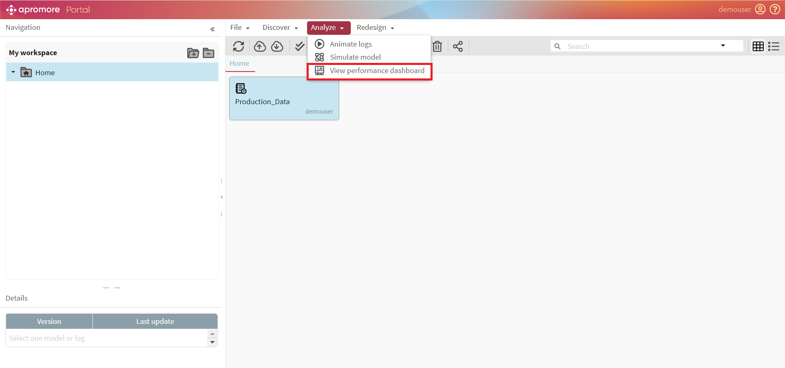
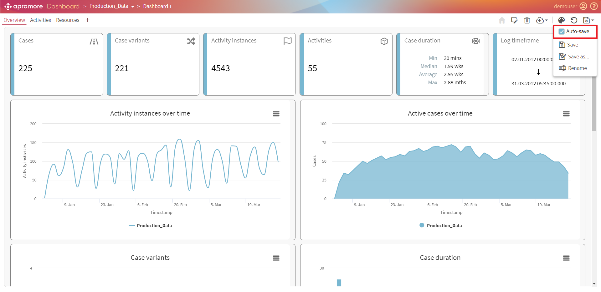
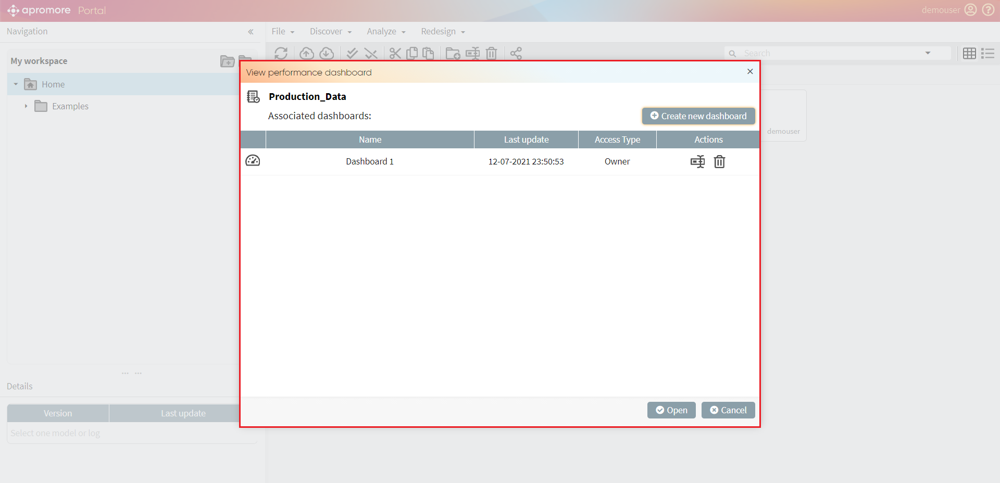
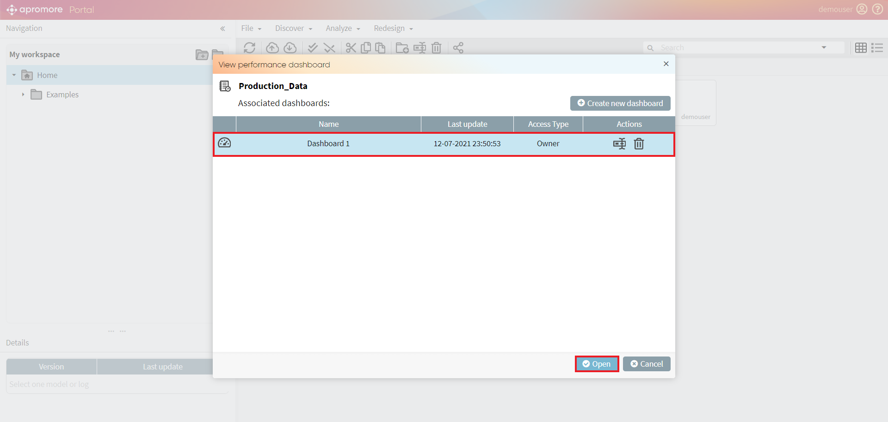

Save dashboard
Apromore allows us to choose whether or not to auto-save changes to a dashboard.
Save a dashboard
Select a log and click on View performance dashboard.

To auto-save a file, click on the Save dashboard button.
To enable/disable the auto-save option, click on the tick-box.

Note
The auto-save option is enabled by default
Open a saved dashboard
To open a saved dashboard, select a log and click on View performance dashboard.
The View performance dashboard window appears if the log have any saved dashboards associated with it.

To open a saved dashboard, select it and click on Open.
